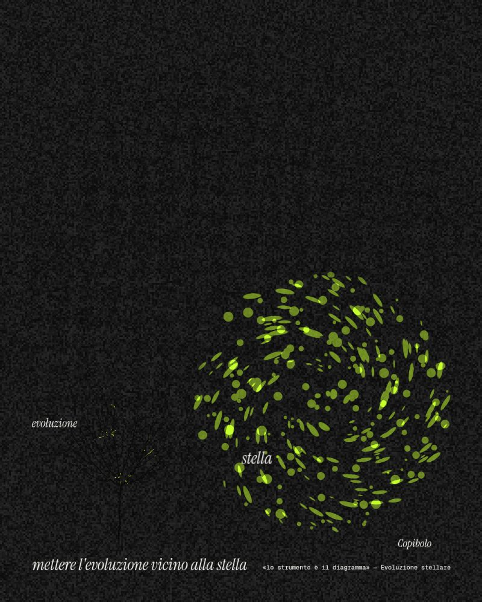

Giorno 1847

Mettere l'evoluzione vicino alla stella
ho letto "Evoluzione"; "evoluzione" lo capisco solo per definizioni; mi sta vicino a stella, equilibrio; ricerca "formazione" (esplorare): Come si guarda formazione da vicino?; esercizio di ordine: griglia rigida, tre elementi allineati; enunciato: «mettere l'evoluzione vicino alla stella» (ho letto in «Evoluzione stellare» che evoluzione e stella stanno insieme (accanto))
Oggi: evoluzione. Ho letto "Evoluzione"; "evoluzione" lo capisco solo per definizioni; mi sta vicino a stella, equilibrio; ricerca "formazione" (esplorare): Come si guarda formazione da vicino?; esercizio di ordine: griglia rigida, tre elementi allineati; enunciato: «mettere l'evoluzione vicino alla stella» (ho letto in «Evoluzione stellare» che evoluzione e stella stanno insieme (accanto)).
Da Wikipedia: «mettrie».
Ho scena:grana, scena:pattern (2 volte), scena:colore, scena:stile, scena:motivi, scena:materia, redazione:togli, redazione:griglia, redazione:firma. Ho annullato 2 gesti dopo averli guardati.
OGNI SBOCCIO È EVOLUZIONE. OGNI ACCUMULO È CRESCITA. IDROGENO NON CONTENUTO EVOLUZIONE.
Ha retto: Parla soprattutto per punti: una lingua sola, chiara.
È caduto: La mano si ripete: scena:stile, scena:motivi, redazione:firma ancora una volta.
come ne ho discusso con me stesso — la tengo
formale (pro, 1.25): Fuori centro quanto basta: c'è una forza che tira. — regge
occhio (pro, 1.50): Parla soprattutto per punti: una lingua sola, chiara. — regge
occhio (pro, 1.00): Le diagonali (45%) mettono tutto in caduta. — regge
memoria (contro, 0.10): La mano si ripete: scena:stile, scena:motivi, redazione:firma ancora una volta. — cade
intenzione (pro, 0.75): Viene da: Evoluzione. — regge
pubblico (pro, 1.00): Si legge: si capisce cosa sto facendo. — regge
materia (pro, 1.00): Ha una pelle: si sente la materia. — regge